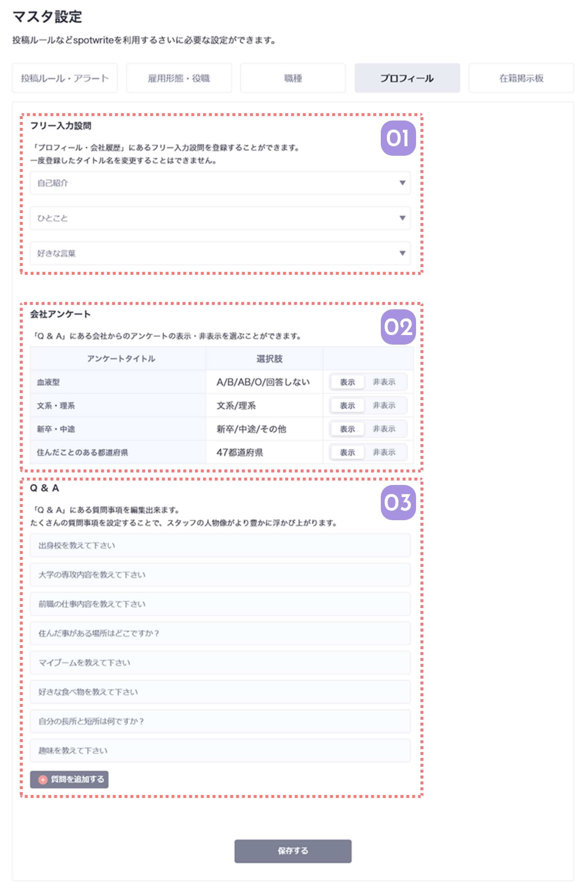

プロフィールのマスタは、メンバーのプロフィール項目を自由にカスタマイズできる画面です。
デフォルトの設定のままでも使えますが、より会社の色を出すようなプロフィールを作りたい時に使えます。

01
フリー入力設問のタイトルを設定できます
プロフィールに表示されるフリー設問のタイトルを設定できます。
登録できるフリー設問は３つで、タイトルは一度登録すると、変更できません。
Spotwriteを使い始める前に慎重に設定しましょう。
02
会社アンケートの表示/非表示の切り替え
メンバープロフィールで必須項目になっている会社アンケートの各項目を公開するかどうかを選ぶことができます。
血液型や住んだことのある県など、見せたくない情報がある場合はここを非表示に切り替えるとアプリやWEBに表示されなくなります。
03
Q&Aを設定できます
プロフィールQ&Aは、企業によっていくつでも、なんでも登録が可能です。
デフォルトをそのまま使うも可。企業独自の業種にちなんだ質問など、ユニークな質問を追加するのも可。いくつでも追加ができるので、社員の方の意見を聞きながらカスタマイズしてみてください。

保存ボタンで保存できます